1. 产品概述
MCS 是一套面向报警、对讲、广播场景的 SIP 融合通信服务器。
它把报警呼叫、门口机对讲、分区广播、实时寻呼、电话会议、录音和终端管理集中在一个网页控制台中，适合小区、园区、工厂、学校、医院、酒店、停车场、指挥中心等场景。
1.1 主要功能
| 功能 | 说明 |
|---|---|
| 设备管理 | SIP 终端注册、在线状态、租期、删除、抓拍地址 |
| 报警 | 报警呼叫、逐级升级、事件处置、测试报警 |
| 通话与对讲 | 点对点通话、视频对讲、WebRTC 查看、开锁、抓拍、话单、录音 |
| 广播 | TTS 广播、音频库广播、分区/全区、优先级抢占、定时任务 |
| 实时寻呼 | SIP 话机或网页麦克风对分区实时讲话、PIN、权限、记录 |
| 电话会议 | 网页建房、多人音频混音、H264 视频、WebRTC 网页加入、录音 |
| 控制台 | 总览、系统设置、用户权限、实时日志、TTS 设置、系统信息 |
| 安全 | 控制台账号/RBAC、SIP TLS、HTTPS、SRTP（按终端支持） |
1.2 三类使用人员
| 角色 | 主要工作 |
|---|---|
| 值班人员 | 接报警、接对讲、听广播、发起寻呼、加入会议 |
| 操作员 | 设备、广播、寻呼、会议、报警处置 |
| 管理员 | 系统设置、用户管理、TTS、重启、全部业务 |
1.3 控制台界面
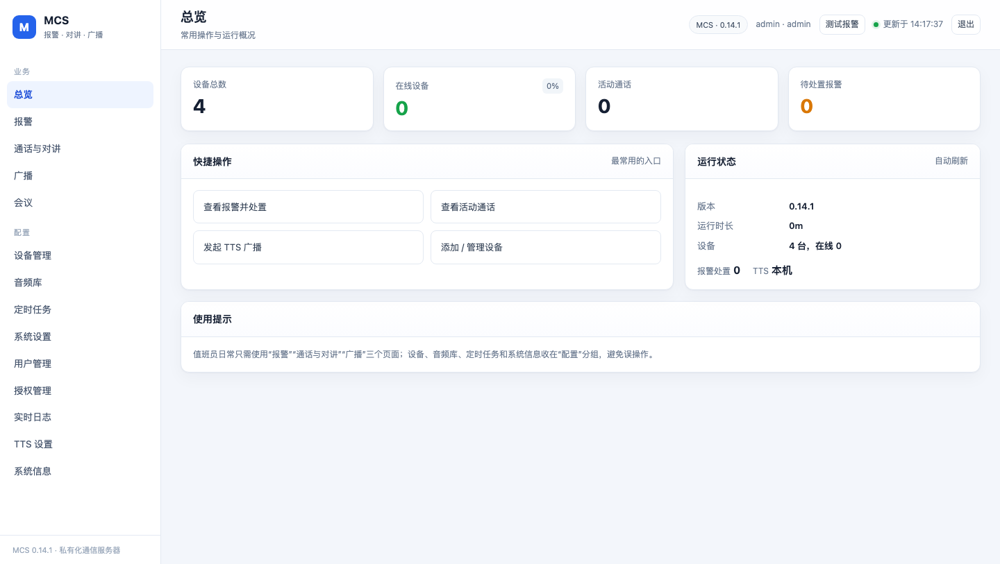
左侧导航分为：
- 业务：总览、报警、通话与对讲、广播、会议；
- 配置：设备管理、音频库、定时任务、系统设置、用户管理、实时日志、TTS 设置、系统信息。
右上角显示当前账号、测试报警、更新时间和退出。
2. 快速开始
2.1 登录
用浏览器打开 MCS 控制台地址，例如：
http://192.168.1.10:8080/
如果页面没有登录，会自动弹出登录框。
- 用户名：通常是
admin； - 密码：首次安装生成在
<data_dir>/initial-admin.txt，或使用管理员配置的console_password。
Windows 安装版默认数据目录：
C:\ProgramData\MCS\data
因此初始密码文件通常是：
C:\ProgramData\MCS\data\initial-admin.txt
登录后右上角显示：
admin · admin 退出
2.2 首次检查
登录后建议按顺序检查：
- 系统设置：设备访问 IP、SIP 端口、HTTP 端口是否正确；
- 设备管理：设备是否注册、是否在线；
- 广播分区：分区和寻呼短号是否正确；
- TTS 设置：TTS 服务是否可用；
- 用户管理：是否需要新增 operator/viewer 账号。
2.3 常用入口
| 要做的事 | 页面 |
|---|---|
| 看设备在线情况 | 设备管理 / 总览 |
| 处理报警 | 报警 |
| 接对讲、看视频、开锁 | 通话与对讲 |
| 发 TTS/音频广播 | 广播 |
| 实时喊话 | 广播 → 网页实时寻呼 |
| 多人开会 | 会议 |
| 创建用户 | 用户管理 |
| 看运行日志 | 实时日志 |
| 修改端口/IP | 系统设置 |
3. 账号与权限
3.1 角色
| 角色 | 权限 |
|---|---|
| admin | 全部功能，包括系统设置、用户管理、重启、TTS、服务器设置 |
| operator | 业务操作：报警处置、设备、广播、寻呼、会议、对讲；不能改系统设置和用户 |
| viewer | 只读查看；不能发起广播、寻呼、会议操作、对讲控制 |
3.2 新增用户
管理员进入：
配置 → 用户管理 → 新增用户
填写：
- 用户名：2-32 位；
- 初始密码：至少 8 位；
- 角色：admin / operator / viewer。
创建后请把账号和初始密码交给使用人，并提醒首次登录后修改密码。
3.3 修改自己的密码
配置 → 用户管理 → 修改我的密码
输入当前密码和新密码。
3.4 账号安全建议
- 不要多人共用 admin；
- 值班人员使用 operator；
- 只读展示屏使用 viewer；
- 定期更换密码；
- 离职人员及时禁用或删除；
- 初始管理员密码修改后删除
initial-admin.txt。
4. 总览
“总览”用于快速查看系统状态：
- 设备总数；
- 在线设备数；
- 报警事件；
- 活动通话；
- 最近话单；
- 活动广播；
- 系统更新时间。
总览每 2 秒自动刷新。设备、报警、通话状态以服务端为准。
5. 设备管理
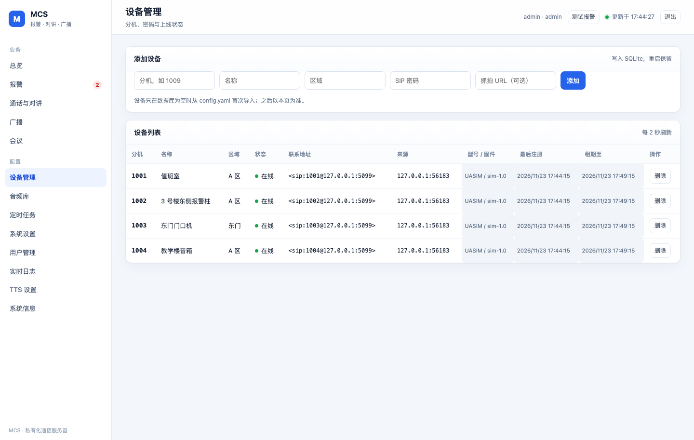
5.1 添加设备
进入：
配置 → 设备管理 → 添加设备
填写：
| 字段 | 说明 |
|---|---|
| 分机 | SIP 分机号，例如 1001 |
| 名称 | 例如“北门门口机” |
| 区域 | 例如“北区” |
| SIP 密码 | 终端注册密码 |
| 抓拍 URL | 可选，HTTP 图片地址，用于抓拍按钮 |
点击“添加”。设备保存到 SQLite，重启后保留。
5.2 设备列表
列表显示：
- 分机、名称、区域；
- 在线/离线；
- Contact 地址；
- 注册来源；
- 型号/固件（终端上报时显示）；
- 最后注册时间；
- 租期至；
- 删除按钮。
5.3 SIP 终端配置
在话机、门口机、音箱中配置：
SIP 服务器：MCS 的 IP
SIP 端口：5060（或实际配置）
传输：UDP / TCP / TLS
账号：设备分机
密码：设备密码
音频编码建议：
- PCMU；
- PCMA。
视频对讲设备还需支持：
- H264；
- SIP INVITE；
- RTP/RTCP。
5.4 在线与租期
MCS 按注册租期判断在线：
- 默认租期 300 秒；
- 设备应在租期到期前重新注册；
- 租期到期未续注册，显示离线；
- 可启用 SIP OPTIONS 心跳加快离线检测。
心跳配置在“系统设置”，默认关闭。
5.5 删除设备
在设备列表点击“删除”。
删除后：
- 设备不能再注册；
- 历史话单和录音仍保留；
- 需要重新添加才能恢复。
6. 报警
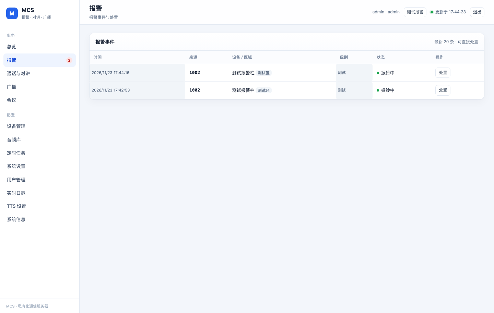
6.1 报警流程
典型流程：
报警设备呼叫报警号码（默认 8000）
↓
MCS 按报警级别依次呼叫值班目标
↓
接通后双方通话
↓
未接通则升级到下一级
↓
控制台生成报警事件
报警号码在“系统设置 → 报警号码”中配置。
6.2 报警事件
进入“报警”页面：
- 查看报警时间、设备、区域、级别、接听人、状态；
- 点击“处置”关闭事件；
- 事件关闭后不再出现在待处理列表。
6.3 测试报警
右上角“测试报警”用于验证：
- 报警事件能否生成；
- 值班人员能否收到；
- 报警录音和话单是否正常。
测试前应确认不会影响真实值班。
6.4 报警级别
管理员在配置文件中设置报警级别和目标：
alarm:
number: "8000"
levels:
- name: "一级"
members: ["1001", "1002"]
timeout_s: 20
- name: "二级"
members: ["1003"]
timeout_s: 30
实际配置以现场为准。修改后需要重启 MCS。
7. 通话与对讲
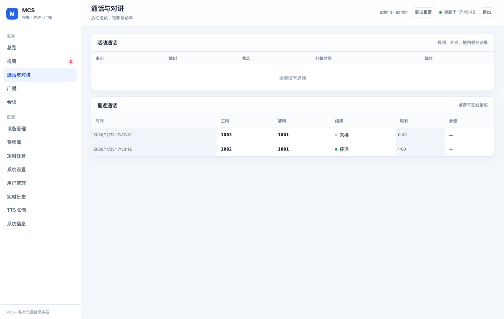
7.1 点对点通话
设备之间、设备与话机之间可以直接拨分机号。
MCS 作为 B2BUA：
- 建立主叫和被叫两条腿；
- 转发 RTP；
- 生成话单；
- 按配置录音。
7.2 视频对讲
带 H264 的门口机呼叫值班室：
- 值班室话机接听，或浏览器打开视频；
- “通话与对讲”页面显示活动通话；
- 点击“视频”只查看和收听，不会打开浏览器麦克风；
- 只有门口机通话才显示“视频对讲”，点击后才会打开麦克风与门口机对讲。
浏览器视频窗支持：
- 查看门口机视频；
- 接收门口机音频；
- “视频对讲”模式下才回传浏览器麦克风；
- 关闭视频窗结束查看。
普通报警通话/分机通话只显示“视频”，不会启用浏览器麦克风，避免把电脑环境噪声送进通话。
7.3 开锁
通话中点击“开锁”，MCS 向门口机发送 DTMF INFO。
默认开锁指令：
#
不同门口机可能使用 * 或其他指令，以设备说明为准。
7.4 抓拍
设备配置了“抓拍 URL”后，通话中点击“抓拍”会打开该 URL 的图片。
URL 由设备厂家提供，通常是：
http://设备IP/snapshot.jpg
7.5 活动通话
显示：
- 主叫、被叫；
- 通话状态；
- 开始时间；
- 视频/开锁/抓拍按钮。
7.6 话单与录音
“通话与对讲”页面下方显示最近话单：
| 字段 | 说明 |
|---|---|
| 开始 | 通话开始时间 |
| 主叫 | 发起方 |
| 被叫 | 接收方 |
| 结果 | 接通/未接/忙/失败/取消 |
| 时长 | 通话时长 |
| 录音 | 有录音时显示“播放” |
录音文件保存在数据目录的 recordings/ 下。
8. 广播
广播用于向一个或多个分区播放单向音频。
页面：
业务 → 广播
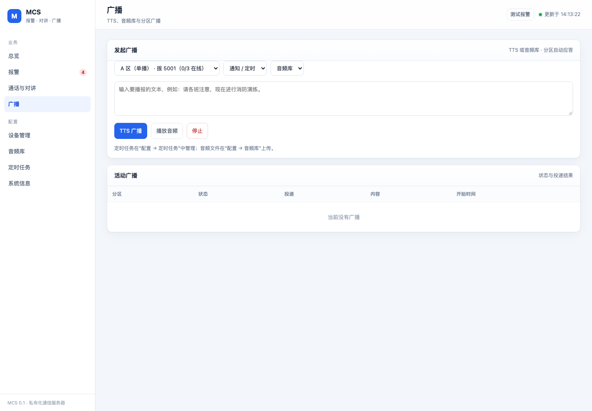
8.1 TTS 广播
- 选择分区；
- 选择优先级；
- 输入播报文本；
- 点击“TTS 广播”。
MCS 调用 TTS 服务生成语音，再向分区终端播放。
TTS 服务在：
配置 → TTS 设置
配置。
8.2 音频库广播
- 进入“配置 → 音频库”上传 WAV/MP3；
- 回到“广播”；
- 选择音频；
- 点击“播放音频”。
音频库支持：
- WAV；
- MP3；
- 上传、试听、删除。
8.3 优先级
广播支持优先级：
| 优先级 | 用途 |
|---|---|
| 紧急 | 最高，可抢占普通广播 |
| 实时 | 实时通知 |
| 通知/定时 | 日常通知 |
| 背景音乐 | 最低 |
高优先级广播可以抢占低优先级广播。具体是否抢占取决于分区当前状态。
8.4 实时寻呼
实时寻呼是值班人员现场说话，不是预录内容。
两种方式：
方式一：SIP 话机
拨打分区寻呼短号，例如：
5001
接通后直接讲话，挂机结束。
方式二：网页麦克风
广播 → 网页实时寻呼
- 选择分区；
- 如配置了 PIN，输入 PIN；
- 点击“开始网页寻呼”；
- 允许麦克风；
- 讲话；
- 点击“停止”。

要求：
- HTTPS 或本机
127.0.0.1/localhost； - 分区有在线自动应答终端；
- 终端支持自动接听。
寻呼记录在广播页下方查看：
- 来源；
- 分区；
- SIP/网页；
- 状态；
- 投递数；
- 开始/结束时间。
寻呼与 TTS 广播的区别：
- 寻呼是真人现场讲话；
- TTS/音频是预生成内容；
- 寻呼挂机即结束；
- TTS/音频播放完自动结束。
8.5 定时任务
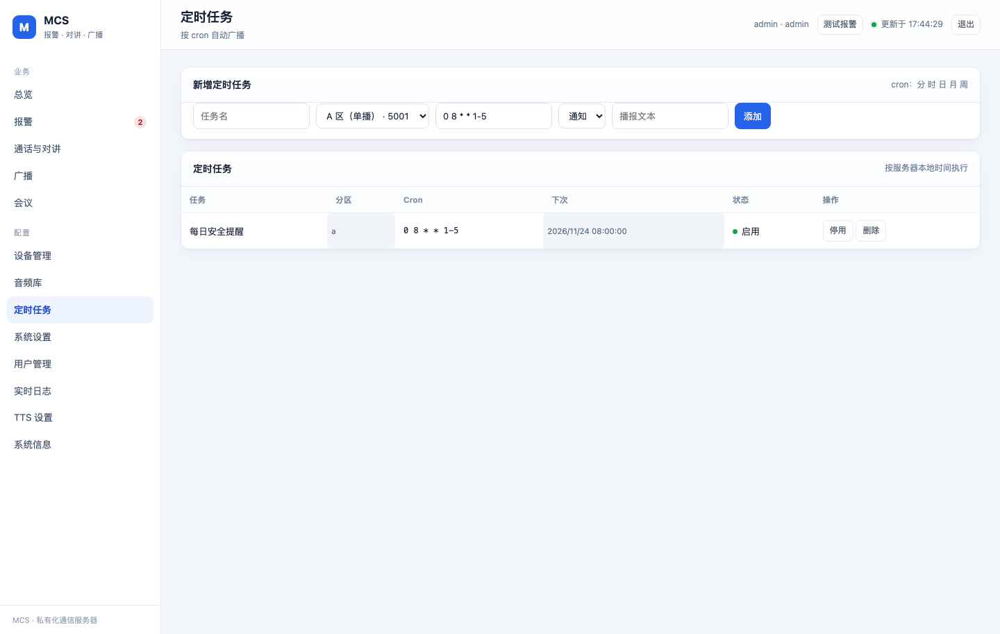
进入：
配置 → 定时任务
创建定时广播：
- 任务名；
- 分区；
- cron：分 时 日 月 周；
- 优先级；
- 播报文本。
支持启停、删除。定时任务按服务器本地时间执行。
示例：
0 8 * * 1-5
表示工作日每天 8:00。
8.6 网页分区管理
管理员可以直接在网页管理广播分区，不必手工编辑 config.yaml：
业务 → 广播 → 广播分区管理
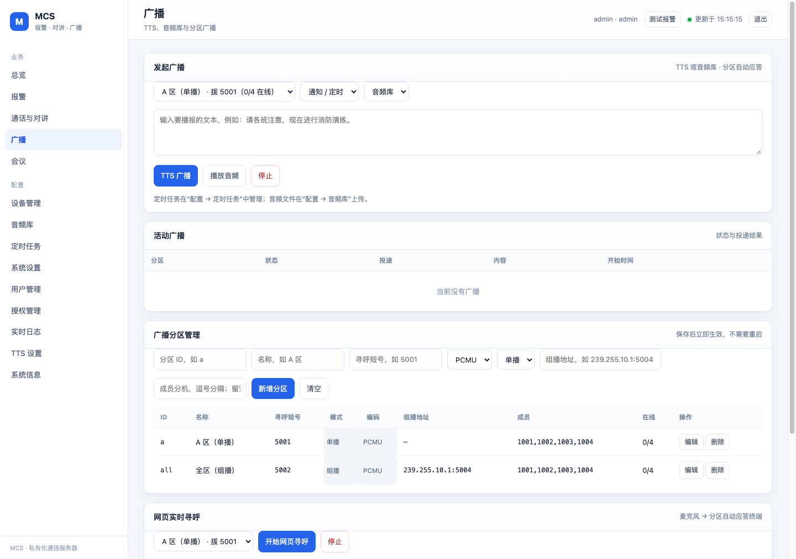
可以新增/编辑/删除：
- 分区 ID；
- 名称；
- 寻呼短号；
- 编码：PCMU / Opus；
- 模式：单播 / 组播；
- 组播地址和端口；
- 成员分机；留空表示所有设备。
保存后立即生效，不需要重启。配置保存到 SQLite，重启后保留。
注意：
- 分组正在广播时不能编辑或删除；
- 至少保留一个分区；
- 组播地址必须是合法的
239.x.x.x类地址； - 分区配置首次来自
config.yaml，之后以网页/数据库为准。
8.7 广播终端要求
分区终端需要：
- 注册到 MCS；
- 支持自动应答；
- 支持 PCMU 或 PCMA；
- 组播分区还需加入对应组播组。
普通软电话通常需要人工接听，不建议作为广播终端。
9. 电话会议
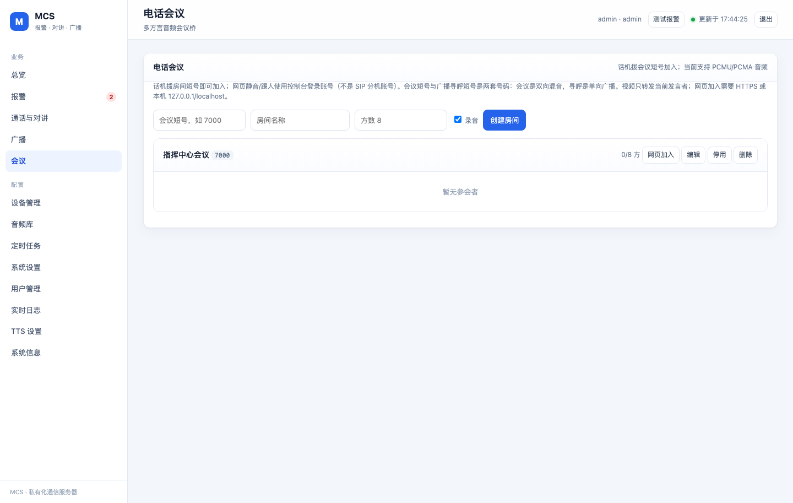
9.1 创建会议房间
管理员进入：
业务 → 会议
填写：
- 会议短号，例如
7000； - 房间名称；
- 最大方数，默认 8，最大 16；
- 是否录音。
点击“创建房间”。
房间保存到 SQLite，立即生效，不需要重启。
管理员还可以：
- 编辑房间；
- 启用/停用；
- 删除空房间；
- 查看录音链接。
9.2 加入会议
SIP 话机
直接拨会议短号：
7000
网页加入
会议房间右侧点击“网页加入”：
- 浏览器请求麦克风和摄像头；
- 允许后加入；
- 网页麦克风进入会议混音；
- 网页摄像头可以成为会议视频源；
- 网页显示当前发言者视频。
网页会议需要：
- HTTPS；
- 或本机
127.0.0.1/localhost； - 浏览器支持 H264 和 PCMU/PCMA。
9.3 会议操作
在会议页面：
- 查看参会者；
- 静音/取消静音；
- 踢出；
- 查看媒体类型（音频/视频）；
- 查看加入时间。
权限：
- admin/operator 可静音、踢人；
- viewer 只读；
- 房间创建、编辑、删除仅 admin。
9.4 会议媒体
音频：
- PCMU/PCMA 8kHz；
- 服务器混音；
- 每方听其他方，不听自己。
视频：
- H264；
- 只转发当前发言者；
- 不是多画面合成；
- 需要终端/浏览器支持 H264。
会议录音：
- 混音音频生成 WAV；
- 不包含视频；
- 房间启用录音后生效。
9.5 会议音频处理
管理员在“会议”页面下方可以调整会议音频处理，保存后立即生效，不需要重启。
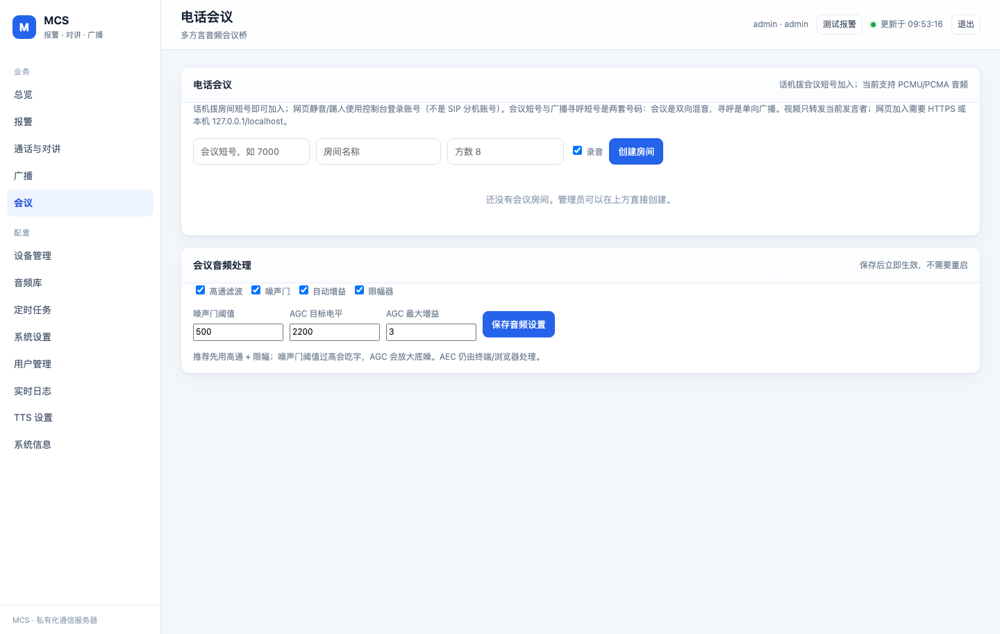
| 选项 | 作用 | 建议 |
|---|---|---|
| 高通滤波 | 去除低频轰鸣、空调低频噪声 | 建议开启 |
| 噪声门 | 压低持续的环境底噪 | 从阈值 400 开始，过高会吃字 |
| 自动增益 | 自动调整参会者音量 | 现场需要时开启，会放大底噪 |
| 限幅器 | 防止多人混音削波、电音 | 建议开启 |
可调参数：
- 噪声门阈值：50-4000，默认 400；
- AGC 目标电平：500-12000，默认 2200；
- AGC 最大增益：1-16，默认 4。
建议先用“高通 + 限幅”，再根据现场决定是否开启噪声门和 AGC。
服务器不做 AEC。回声消除由 SIP 会议麦克风/话机自身或 WebRTC 浏览器完成；网页加入会议时，浏览器会请求 AEC、噪声抑制和自动增益。
9.6 会议限制
- 默认 8 方，最大 16；
- 没有会议 PIN；
- 没有主持人角色；
- 没有多画面；
- 不支持 Opus/SRTP 会议；
- WebRTC 跨 NAT 需要 STUN/TURN，当前未内置。
10. 系统配置
10.1 服务器设置
进入：
配置 → 系统设置
可配置：
- 设备访问 IP；
- SIP 端口；
- SIP 监听地址；
- HTTP 监听地址；
- HTTPS 监听地址；
- SIP 域名；
- 报警号码；
- G.711 转码；
- Alert-Info 自动应答；
- SIP OPTIONS 心跳；
- 心跳间隔、超时、失败次数。
保存后需要重启生效。
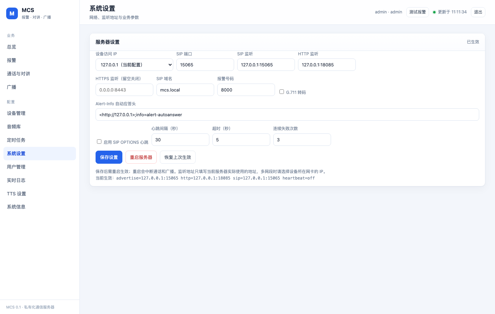
10.2 设备访问 IP
“设备访问 IP”是写进 SIP 消息和 SDP 的 MCS 地址。
必须填写设备实际能访问到的服务器 IP。
多网卡服务器如果选错 IP，可能出现：
- 设备注册成功但呼叫无声音；
- SDP 地址不可达；
- 视频/广播不到终端。
修改后需要重启。
10.3 报警号码
默认：
8000
设备呼叫该号码触发报警流程。
10.4 G.711 转码
默认关闭。
只有在两端编码不一致时才需要开启：
- PCMU ↔ PCMA；
- 会占用服务器 CPU；
- 正常同编码通话不需要转码。
10.5 心跳
SIP OPTIONS 心跳用于快速发现离线设备。
默认关闭。开启后：
- 定期向在线设备发 OPTIONS；
- 任意 SIP 响应算在线；
- 超时累计失败，达到次数后标记离线；
- 心跳成功会续租。
设备不支持 OPTIONS 或 NAT 只允许设备主动出站时，建议保持关闭。
10.6 重启服务器
“系统设置 → 重启服务器”会：
- 中断当前通话、广播、会议；
- 重启 Windows 服务或进程；
- 保存的配置仍然保留。
重启前应确认没有正在进行的紧急业务。
11. TTS 设置
进入：
配置 → TTS 设置
支持：
- OpenAI 兼容接口；
- 千问 DashScope；
- 本地 Kokoro；
- MiniMax。
字段：
| 字段 | 说明 |
|---|---|
| Provider | openai 或 minimax |
| Base URL | 接口地址 |
| Model | 模型名 |
| API Key | 密钥；留空保持当前 |
| 中文音色 | 中文 voice |
| 英文音色 | 英文 voice |
| 超时 | 合成超时时间 |
点击“测试合成”验证。
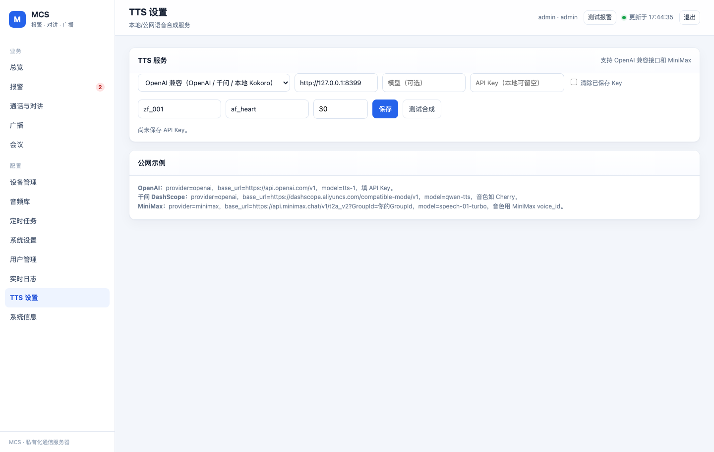
12. 用户管理
进入：
配置 → 用户管理
功能：
- 新增用户；
- 修改角色；
- 启用/停用；
- 删除用户；
- 修改我的密码；
- 查看最后登录时间。
安全限制：
- 不能删除最后一个 admin；
- 不能删除自己；
- 修改角色后会话权限立即生效。
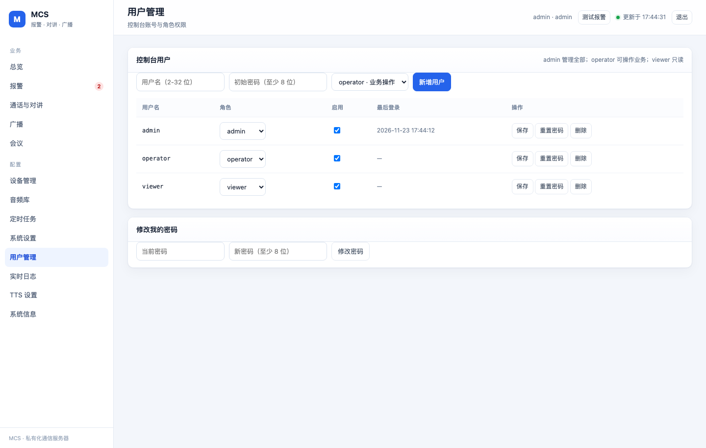
12.1 授权管理
管理员进入：
配置 → 授权管理
查看：
- 授权状态：试用 / 已授权；
- 客户名称；
- 授权编号；
- 最大话机数；
- 授权到期时间；
- 剩余天数；
- 已配置话机数；
- 当前在线话机数；
- 激活时间。
把供应商提供的激活码粘贴到页面，点击“激活”，立即生效。
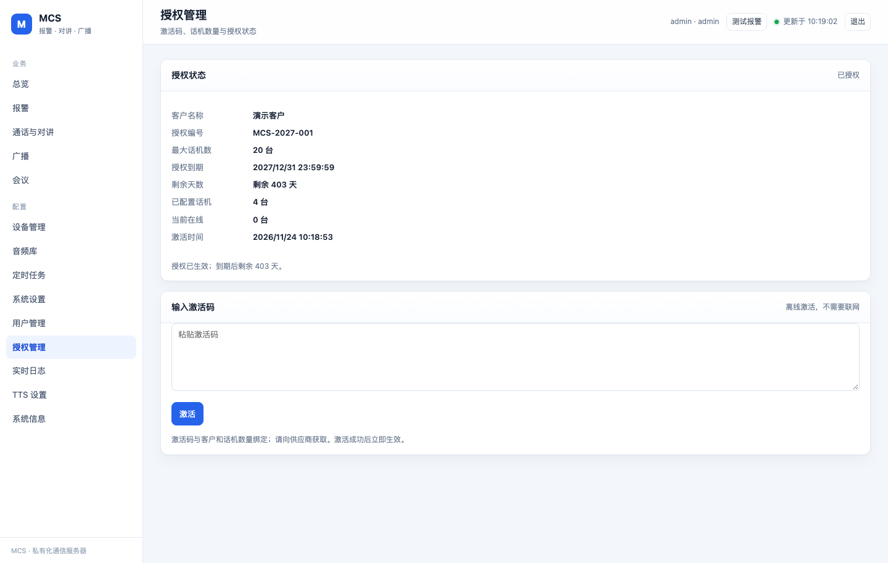
未激活时最多 4 台话机在线。激活后：
- 新增设备不能超过授权数量；
- 在线注册话机不能超过授权数量；
- 已有在线话机不会被强制下线。
激活码可以设置到期时间；到期后会转为试用授权（最多 4 台在线），需要供应商重新签发续期码。没有设置到期时间的激活码为永久授权。激活码当前不绑定机器。
13. 实时日志
进入：
配置 → 实时日志
功能：
- 查看服务器实时日志；
- 按级别过滤；
- 按关键字过滤；
- 隐藏 HTTP 轮询；
- 暂停刷新；
- 清空显示；
- 下载日志。
用于排查：
- 注册失败；
- 呼叫 486/480；
- 广播失败；
- 会议加入失败；
- 寻呼失败。
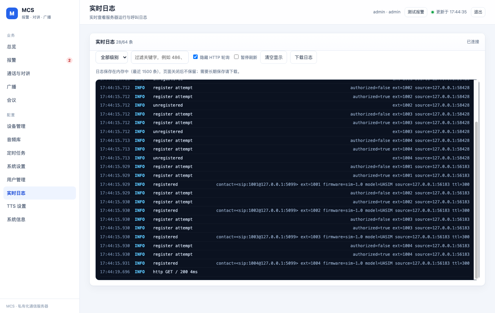
14. 音频库
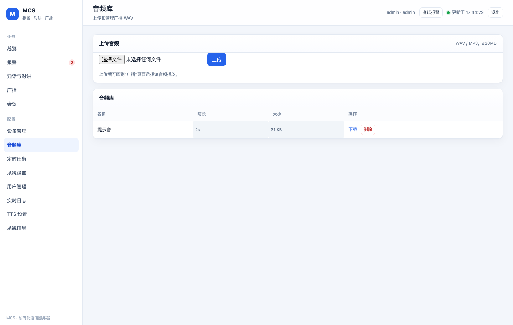
进入：
配置 → 音频库
支持：
- 上传 WAV/MP3；
- 试听；
- 删除；
- 在广播页选择播放。
上传后回到“广播”页面选择音频文件。
15. 系统信息
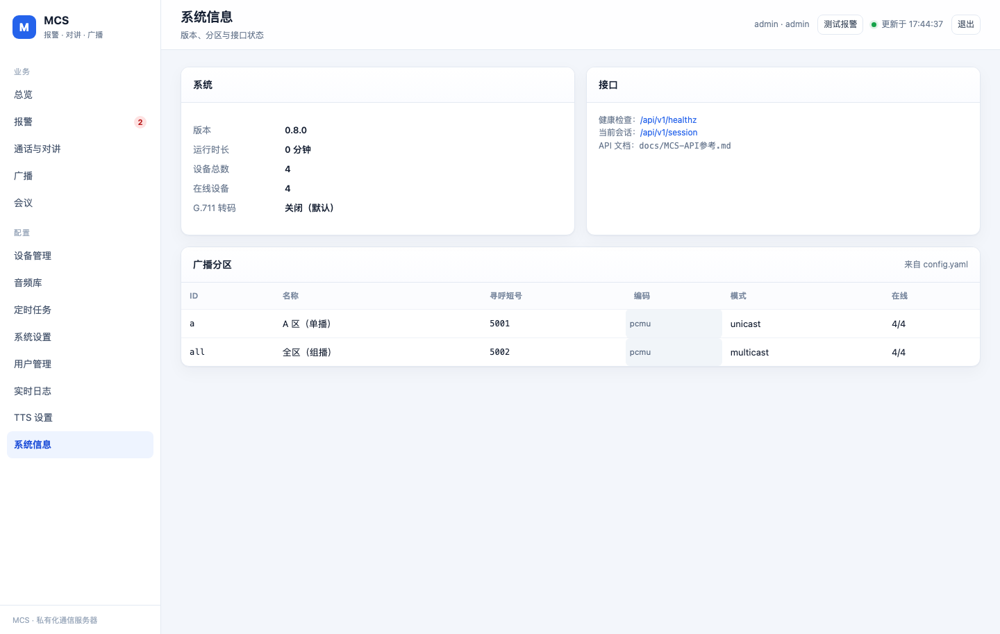
进入：
配置 → 系统信息
显示：
- 版本；
- 运行时长；
- 设备总数；
- 在线设备；
- G.711 转码状态；
- 接口地址；
- 广播分区列表。
用于交付验收和远程支持。
16. 数据备份与升级
16.1 数据目录
Windows 默认：
C:\ProgramData\MCS\data
包含：
mcs.db：设备、用户、会议房间、寻呼记录等；recordings/：通话和会议录音；audio/：音频库、TTS 缓存；initial-admin.txt：首次管理员密码。
16.2 备份
- 停止 MCS 服务；
- 复制整个数据目录到备份盘；
- 再启动服务。
建议定期备份 mcs.db 和 recordings/。
16.3 升级
使用新版安装包覆盖安装：
- 程序文件更新；
- 数据目录默认保留；
- 数据库自动迁移。
升级前建议先备份数据目录。
17. 常见问题
17.1 登录提示 401
表示未登录或会话失效。
处理：
Ctrl + F5强制刷新；- 查看初始管理员文件；
- 确认账号密码；
- 重新登录。
初始密码文件：
C:\ProgramData\MCS\data\initial-admin.txt
17.2 设备注册不上
检查：
- SIP 服务器 IP/端口；
- 分机、密码；
- 传输协议；
- 防火墙 UDP 5060；
- 设备是否在 MCS 设备列表中。
17.3 能接通但没有声音
检查：
- 设备访问 IP 是否填写正确；
- RTP 端口是否被防火墙拦截；
- 两端编码是否一致；
- 是否开启 G.711 转码；
- 终端音量。
17.4 广播没有声音
检查：
- 分区终端是否在线；
- 终端是否自动应答；
- 分区短号/组播地址；
- 终端音量；
- 广播日志。
17.5 实时寻呼无法开始
检查：
- 分区在线终端；
- 账号角色；
- PIN；
- 网页是否 HTTPS/本机；
- 麦克风权限；
- 是否分区忙。
17.6 会议网页无法加入
检查：
- HTTPS 或本机地址；
- 浏览器麦克风/摄像头权限；
- 浏览器是否支持 H264/PCMU/PCMA；
- 会议房间是否启用；
- 是否已登录 operator/admin。
17.7 网页重启失败
如果点击“重启服务器”后页面一直显示“重启后未恢复”：
- 确认 MCS 是作为 Windows 服务运行，而不是手动运行
mcs.exe； - 使用安装包中的
Repair-Service.cmd修复服务； - 检查
C:\ProgramData\MCS\mcs.log和service-error.log； - 服务恢复依赖 Windows 服务恢复策略；
- 心跳开关本身不会阻止重启；如果开启心跳后才出现，优先检查服务恢复配置和启动日志。
新版已经增加重启辅助进程和 Windows 服务失败恢复标记。
17.8 视频窗黑屏
检查：
- 设备是否发送 H264；
- 视频端口是否可达；
- 浏览器是否支持 H264；
- 通话是否带视频 SDP。
17.8 报警事件没有生成
检查：
- 设备拨的是否报警号码；
- 报警级别是否配置；
- 设备呼叫是否到达 MCS；
- 实时日志。
18. 使用限制与安全建议
18.1 当前定位
MCS 面向报警、对讲、广播垂直场景，不是通用企业 PBX。
当前不包含：
- IVR；
- 语音信箱；
- 排队；
- BLF/Presence；
- 视频会议多画面；
- 消防认证联动。
18.2 视频会议限制
- 视频只转发当前发言者；
- 不是多画面 MCU；
- 只支持 H264；
- 不转码；
- 不支持 SRTP 会议视频；
- WebRTC 跨公网需要 STUN/TURN。
18.3 广播/寻呼限制
- 寻呼是单向实时讲话；
- 寻呼不录音；
- 广播/寻呼默认明文 RTP；
- 不支持消防应急认证；
- 组播需要网络设备支持 IGMP。
18.4 安全建议
- 修改初始管理员密码；
- 使用 operator/viewer 分离权限；
- 控制台启用 HTTPS；
- SIP 网络与办公网络隔离；
- 只允许可信终端访问 MCS；
- 定期备份数据库和录音；
- 不要把 MCS 直接暴露到公网；
- 寻呼 PIN 只发给授权人员。
19. 快速参考
19.1 默认号码
| 功能 | 默认 |
|---|---|
| 报警 | 8000 |
| A 区寻呼 | 5001 |
| 全区寻呼 | 5002 |
| 会议房间 | 由管理员创建，例如 7000 |
实际以现场配置为准。
19.2 常用页面
| 操作 | 路径 |
|---|---|
| 看设备 | 设备管理 |
| 处理报警 | 报警 |
| 看通话 | 通话与对讲 |
| TTS 广播 | 广播 |
| 网页寻呼 | 广播 → 网页实时寻呼 |
| 创建会议 | 会议（admin） |
| 网页会议 | 会议 → 网页加入 |
| 定时任务 | 定时任务 |
| 用户 | 用户管理 |
| 日志 | 实时日志 |
| TTS | TTS 设置 |
19.3 快速操作
报警：设备拨 8000
对讲：设备拨值班分机
广播：广播 → 选分区 → TTS/音频
寻呼：拨 5001，或广播 → 网页实时寻呼
会议：拨 7000，或会议 → 网页加入
20. 技术支持
提交问题时请提供：
- MCS 版本；
- 操作时间；
- 相关分机/设备；
- 操作页面和错误提示；
- 实时日志相关片段；
- 话单/录音/寻呼记录；
- 终端型号和固件版本。
MCS · 报警 / 对讲 / 广播融合通信服务器
文档结束